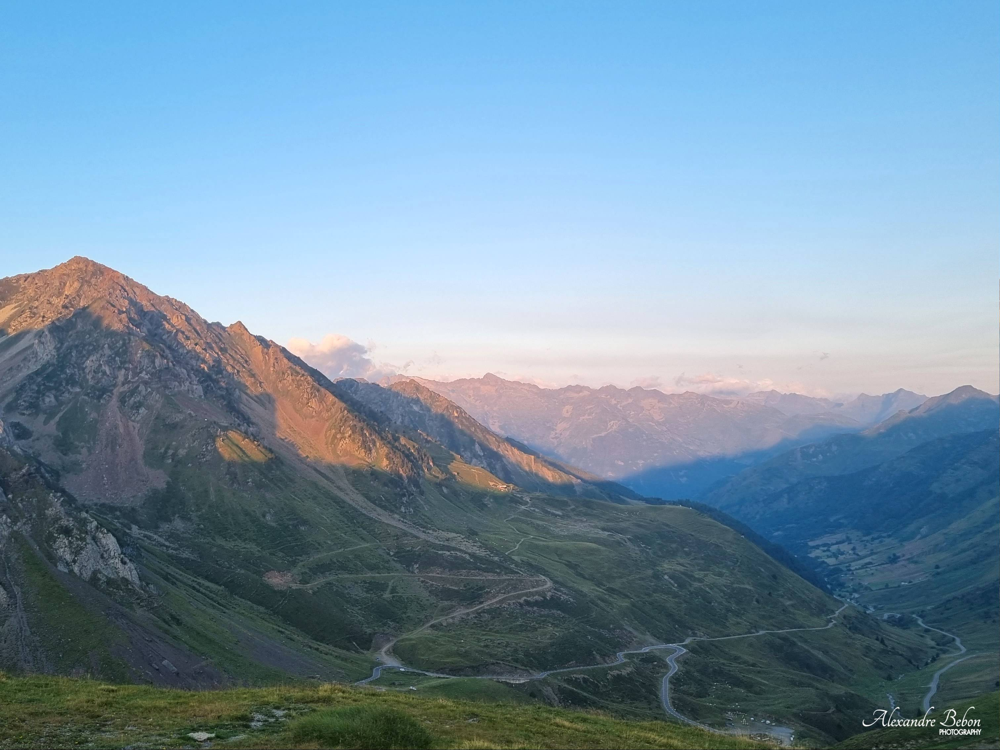

Après deux ans en prépa, confinés pendant plusieurs mois, Lucas et moi décidons de partir à l'aventure. En vélo en autonomie, nous voulons parcourir 550km, de Toulouse à Saint-Jean de Luz, en passant dans les hautes pyrénées et de fameux cols
1000km en autonomie de Hamburg jusqu'au Nord d'Oslo : récit de la traversée de 3 pays en vélo et bivouac. Une aventure riche en rencontres et en paysages dans de magnifiques pays

5 jours avec Vanina, sur la Grande Traversée du Massif Central (GTMC), à esquiver les vaches et les orages. La découverte en VTT en autonomie d'une magnifique région montagneuse de France.